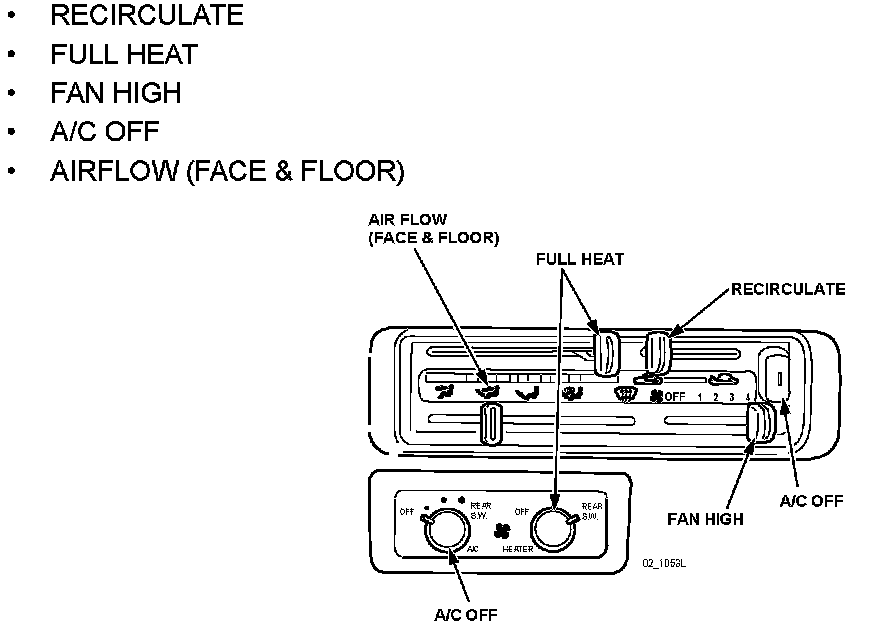
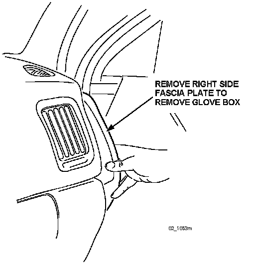
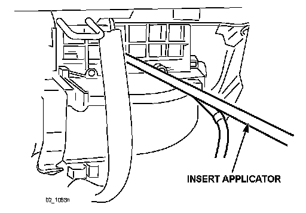

1998 MPV Front A/C and Rear A/C
1998 MPV Front A/C1. Dry the evaporator using the following procedure:
WARNING:
Running the engine inside an enclosed area, such as a garage, is dangerous. Exhaust gas, which contains poisonous carbon monoxide, could easily enter the cabin. Loss of consciousness or even death could occur. Don't run the engine when inside an enclosed area.
A. Start the engine.

B. Set both front and rear (if applicable) HVAC controls as follows:
^ RECIRCULATE
^ FULL HEAT
^ FAN HIGH
^ A/C OFF
^ AIRFLOW (FACE & FLOOR)
C. Open one window approximately one half inch.
D. Let the engine run for 15 minutes.

2. Remove the glove box, removing the side fascia plate on the right door side.
3. Remove the six (6) phillips screws to remove the glove box assembly.
4. Shake a bottle of Mazda Air Cooling Coil Coating well and attach it to the applicator, then connect the applicator to compressed shop air.

5. Insert the applicator into the grille of the re-circulate door. Point the nozzle tip down and towards the center of the cooling unit (approximately 7 o'clock position).
6. Spray the entire contents of the bottle in short bursts, 3 seconds ON, 3 seconds OFF into the rotating fan. A fine mist may exit from the ducts.
NOTE:
If the vehicle is equipped with rear a/c, skip STEP 7 and proceed to STEP 8.
7. When the bottle is empty, stop the engine and remove the applicator.
NOTE:
For reuse, clean the applicator by flushing a bottle of clean water through it.
1998 MPV Rear A/C (if equipped)
8. Remove the four (4) screws holding down the tailgate sill, then remove the sill.
9. Remove the one (1) screw holding down the left inner panel, then lift the complete panel out of the clips.
10. Be sure the HVAC controls are set per STEP 1B.
11. Shake a new bottle of Mazda Air Cooling Coil Coating well and attach it to the applicator, then connect the applicator to compressed shop air.
12. Position the applicator with the nozzle tip pointing down into the air intake of the fan motor.
13. Spray the entire contents of the bottle in short bursts, 3 seconds ON, 3 seconds OFF into the rotating fan. A fine mist may exit from the ducts.
14. When the bottle is empty, stop the engine and remove.
NOTE:
For reuse, clean the applicator by flushing a bottle of clean water through it.
15. Use STEP 1 to dry and cure product.
16. While the product is drying, re-install removed parts.
17. Note application date in service record.